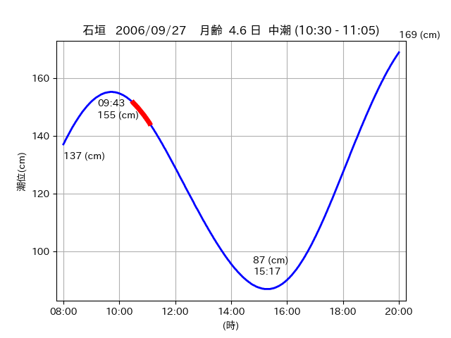
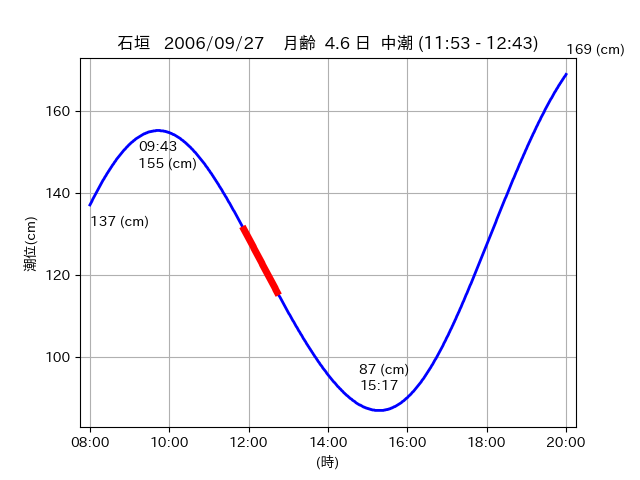

<!DOCTYPE html>
<html>
<head>
    
    <meta http-equiv="content-type" content="text/html; charset=UTF-8" />
    
        <script>
            L_NO_TOUCH = false;
            L_DISABLE_3D = false;
        </script>
    
    <style>html, body {width: 100%;height: 100%;margin: 0;padding: 0;}</style>
    <style>#map {position:absolute;top:0;bottom:0;right:0;left:0;}</style>
    <script src="https://cdn.jsdelivr.net/npm/leaflet@1.9.3/dist/leaflet.js"></script>
    <script src="https://code.jquery.com/jquery-3.7.1.min.js"></script>
    <script src="https://cdn.jsdelivr.net/npm/bootstrap@5.2.2/dist/js/bootstrap.bundle.min.js"></script>
    <script src="https://cdnjs.cloudflare.com/ajax/libs/Leaflet.awesome-markers/2.0.2/leaflet.awesome-markers.js"></script>
    <link rel="stylesheet" href="https://cdn.jsdelivr.net/npm/leaflet@1.9.3/dist/leaflet.css"/>
    <link rel="stylesheet" href="https://cdn.jsdelivr.net/npm/bootstrap@5.2.2/dist/css/bootstrap.min.css"/>
    <link rel="stylesheet" href="https://netdna.bootstrapcdn.com/bootstrap/3.0.0/css/bootstrap-glyphicons.css"/>
    <link rel="stylesheet" href="https://cdn.jsdelivr.net/npm/@fortawesome/fontawesome-free@6.2.0/css/all.min.css"/>
    <link rel="stylesheet" href="https://cdnjs.cloudflare.com/ajax/libs/Leaflet.awesome-markers/2.0.2/leaflet.awesome-markers.css"/>
    <link rel="stylesheet" href="https://cdn.jsdelivr.net/gh/python-visualization/folium/folium/templates/leaflet.awesome.rotate.min.css"/>
    
            <meta name="viewport" content="width=device-width,
                initial-scale=1.0, maximum-scale=1.0, user-scalable=no" />
            <style>
                #map_789d5c2b752d2980c7150b53714addbc {
                    position: relative;
                    width: 2048.0px;
                    height: 1600.0px;
                    left: 0.0%;
                    top: 0.0%;
                }
                .leaflet-container { font-size: 1rem; }
            </style>
        
</head>
<body>
    
    
            <div class="folium-map" id="map_789d5c2b752d2980c7150b53714addbc" ></div>
        
</body>
<script>
    
    
            var map_789d5c2b752d2980c7150b53714addbc = L.map(
                "map_789d5c2b752d2980c7150b53714addbc",
                {
                    center: [24.369, 123.962],
                    crs: L.CRS.EPSG3857,
                    ...{
  "zoom": 12,
  "zoomControl": true,
  "preferCanvas": false,
}

                }
            );

            

        
    
            var tile_layer_7fc34ef8ce8d237592c2012a794c3b15 = L.tileLayer(
                "https://cyberjapandata.gsi.go.jp/xyz/seamlessphoto/{z}/{x}/{y}.jpg",
                {
  "minZoom": 0,
  "maxZoom": 18,
  "maxNativeZoom": 18,
  "noWrap": false,
  "attribution": "\u5730\u7406\u9662\u5730\u56f3",
  "subdomains": "abc",
  "detectRetina": false,
  "tms": false,
  "opacity": 1,
}

            );
        
    
            tile_layer_7fc34ef8ce8d237592c2012a794c3b15.addTo(map_789d5c2b752d2980c7150b53714addbc);
        
    
            var marker_afe925b90521c45e894bccb02d457a14 = L.marker(
                [24.3676, 123.9528],
                {
}
            ).addTo(map_789d5c2b752d2980c7150b53714addbc);
        
    
            var icon_0773c2de332c1ac447714b1cf12488c2 = L.AwesomeMarkers.icon(
                {
  "markerColor": "orange",
  "iconColor": "white",
  "icon": "info-sign",
  "prefix": "glyphicon",
  "extraClasses": "fa-rotate-0",
}
            );
        
    
        var popup_7384fc21daaa5de3d988f5dda0db8a93 = L.popup({
  "maxWidth": "100%",
});

        
            
                var html_390e1bbb3533394cdc5ff4abdd7db7f1 = $(`<div id="html_390e1bbb3533394cdc5ff4abdd7db7f1" style="width: 100.0%; height: 100.0%;"><table><tr><td></td></tr><tr><td><center>20060927 No.1 </center></table></td></tr></table</div>`)[0];
                popup_7384fc21daaa5de3d988f5dda0db8a93.setContent(html_390e1bbb3533394cdc5ff4abdd7db7f1);
            
        

        marker_afe925b90521c45e894bccb02d457a14.bindPopup(popup_7384fc21daaa5de3d988f5dda0db8a93)
        ;

        
    
    
                marker_afe925b90521c45e894bccb02d457a14.setIcon(icon_0773c2de332c1ac447714b1cf12488c2);
            
    
            var poly_line_bab46e2954fab00eaa58391fa70ca101 = L.polyline(
                [[24.3676, 123.9528], [24.3715, 123.9515]],
                {"bubblingMouseEvents": true, "color": "#FF00FF", "dashArray": null, "dashOffset": null, "fill": false, "fillColor": "#FF00FF", "fillOpacity": 0.2, "fillRule": "evenodd", "lineCap": "round", "lineJoin": "round", "noClip": false, "opacity": 1.0, "smoothFactor": 1.0, "stroke": true, "weight": 3}
            ).addTo(map_789d5c2b752d2980c7150b53714addbc);
        
    
            var marker_f707ea1bbfc141891087017786766597 = L.marker(
                [24.3691, 123.9596],
                {
}
            ).addTo(map_789d5c2b752d2980c7150b53714addbc);
        
    
            var icon_efca22b701afaa357cc6c2c5f347dab2 = L.AwesomeMarkers.icon(
                {
  "markerColor": "orange",
  "iconColor": "white",
  "icon": "info-sign",
  "prefix": "glyphicon",
  "extraClasses": "fa-rotate-0",
}
            );
        
    
        var popup_df1d48f60c1b59c4c93f8c4792567546 = L.popup({
  "maxWidth": "100%",
});

        
            
                var html_c0ae6d78185f730a79778769d438a2cc = $(`<div id="html_c0ae6d78185f730a79778769d438a2cc" style="width: 100.0%; height: 100.0%;"><table><tr><td></td></tr><tr><td><center>20060927 No.2 </center></table></td></tr></table</div>`)[0];
                popup_df1d48f60c1b59c4c93f8c4792567546.setContent(html_c0ae6d78185f730a79778769d438a2cc);
            
        

        marker_f707ea1bbfc141891087017786766597.bindPopup(popup_df1d48f60c1b59c4c93f8c4792567546)
        ;

        
    
    
                marker_f707ea1bbfc141891087017786766597.setIcon(icon_efca22b701afaa357cc6c2c5f347dab2);
            
    
            var poly_line_e7ae44b04ec4b7741295275dc90c4d8a = L.polyline(
                [[24.3691, 123.9596], [24.3683, 123.9645]],
                {"bubblingMouseEvents": true, "color": "#00FFFF", "dashArray": null, "dashOffset": null, "fill": false, "fillColor": "#00FFFF", "fillOpacity": 0.2, "fillRule": "evenodd", "lineCap": "round", "lineJoin": "round", "noClip": false, "opacity": 1.0, "smoothFactor": 1.0, "stroke": true, "weight": 3}
            ).addTo(map_789d5c2b752d2980c7150b53714addbc);
        
</script>
</html>